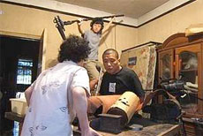

|
NIU PI (Oxhide)
Jiayin Liu | China 2005 | 110 min.
Material: DV
Format: DigiBeta
Original language: Mandarin
Script: Jiayin Liu
Camera: Jiayin Liu
Editing: Jiayin Liu
Sound: Jiayin Liu With Huifen Jia, Jiayin Liu, Zaiping Liu
Production: Jiayin Liu
Print/Sales: Jiayin Liu
Caligari-Filmpreis, Fipresci-Preis 2005, Berlin 2005, Golden DV Award, Hongkong 2005, New Looks Award, Nantes 2006, Dragon and Tigers Award, Vancouver 2006
OXHIDE stands out from the multitudes of digital films that bubble up every month from the astonishingly fertile cultural well of present-day Beijing due to its ambition, its pure nerviness, and the extent to which it has achieved the outsize goals it sets for itself. Liu's subject is her immediate family: the film is about a father, mother, and daughter, played by her father, her mother, and herself (there's also a cat who pops up once in a while). It is shot entirely in their tiny apartment near the main train line in southern Beijing . The parents design and manufacture leather purses and bags, but their business seems to be failing. The daughter is very short and isn't growing, a source of great concern and disappointment to her father. The family makes purses, prepares food, eats, squabbles, and sleeps, all in a warren of tiny, cramped spaces that they occupy so fully there's barely enough room for the air that they need to breath. – Shelly Kraicer, Film-comment
Liu Jiayin was born in 1981, in Beijing, where she grew up. She has studied at the Beijing Film Academy, majoring in screenwriting, since 1999. In 2002 she made her first short film, The Train. OXHIDE is her first full- length film.
Films: Niu pi er 2009 (UNDERDOX 05)| Niu pi 2005
back
|